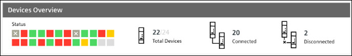
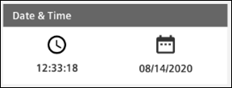
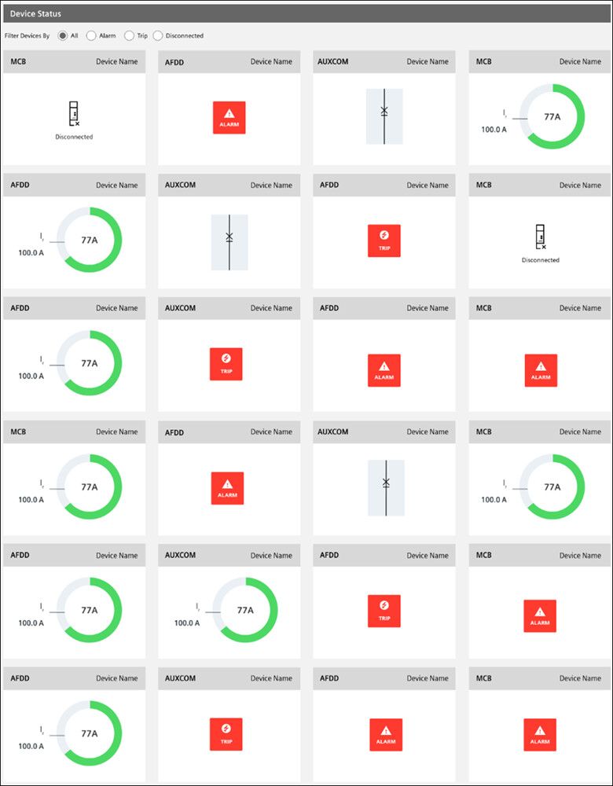

Overview Tab (Powercenter 1000)
The Overview tab displays the summary of different data point values measured by the devices connected through the Powercenter 1000 transceiver. It contains the following sections:
- Devices Overview
Displays the status and the number of devices connected.
- Date & Time
Displays the current date and time.
- Devices Status
Displays the status of all connected devices.